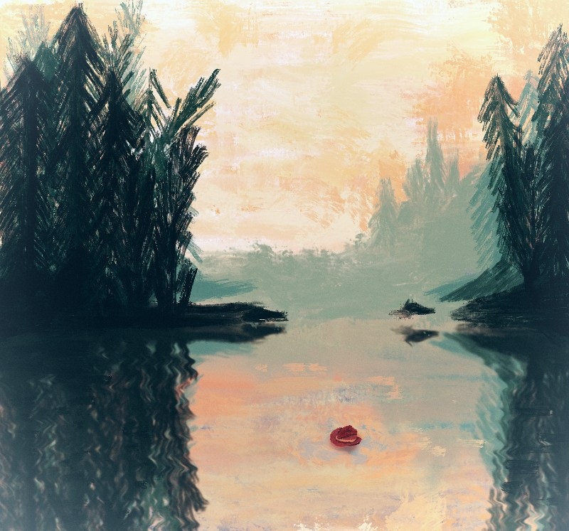

Creacover 2019 : J22
Publié le 04/02/2019 dans Dessin.
La musique du jour est Black water side de Bert Jansch.
Je n’aime pas trop ce style de musique. Je n’étais pas beaucoup inspirée. Au départ, je voyais seulement un canard en caoutchouc qui flotte sur un lac noir, avec un chapeau de cowboy et une cigarette. Pourquoi un canard ? Parce que le chanteur a une voix de gorge. Et le style country m’a fait pensé au chapeau de cowboy et à la cigarette, genre Lucky Luke. Finalement, j’ai changé d’idée.
J’ai regardé la vidéo d’un gars qui dessine un lac et des arbres sur Procreate. J’ai essayé de refaire son paysage en utilisant une autre brosse (Térébenthine) et en intégrant quand-même le chapeau. Ce pauvre cowboy s’est noyé dans le lac, au soleil couchant.
